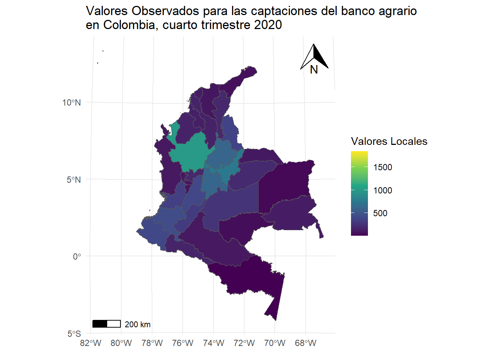
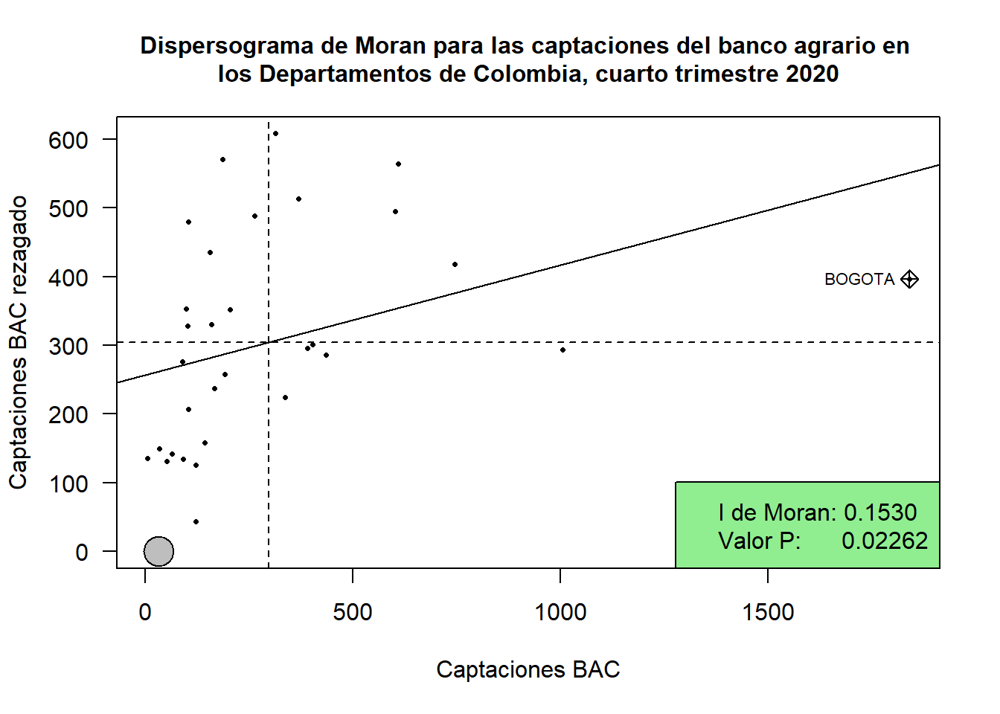
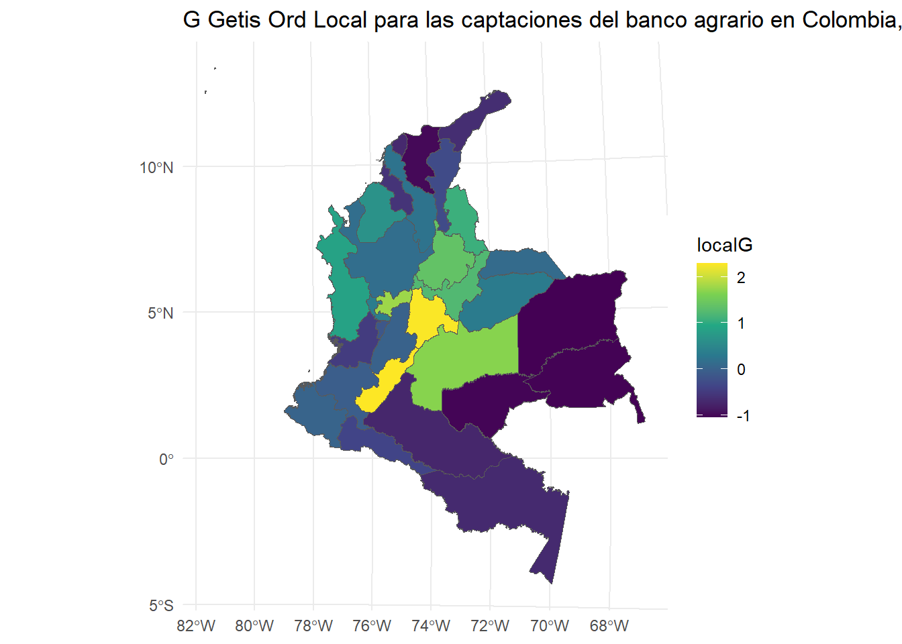
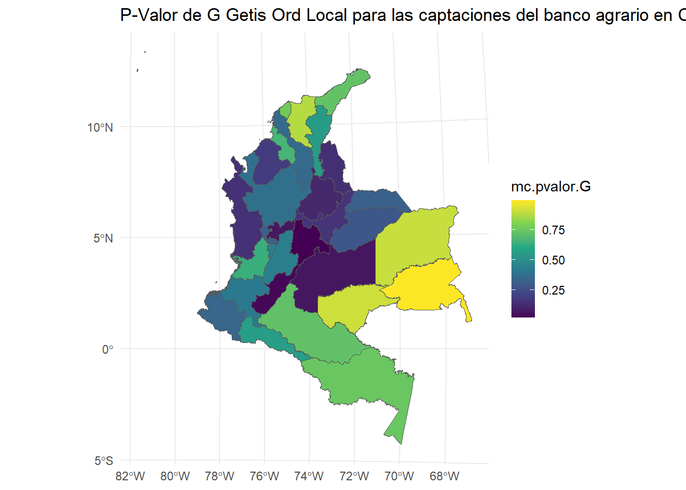
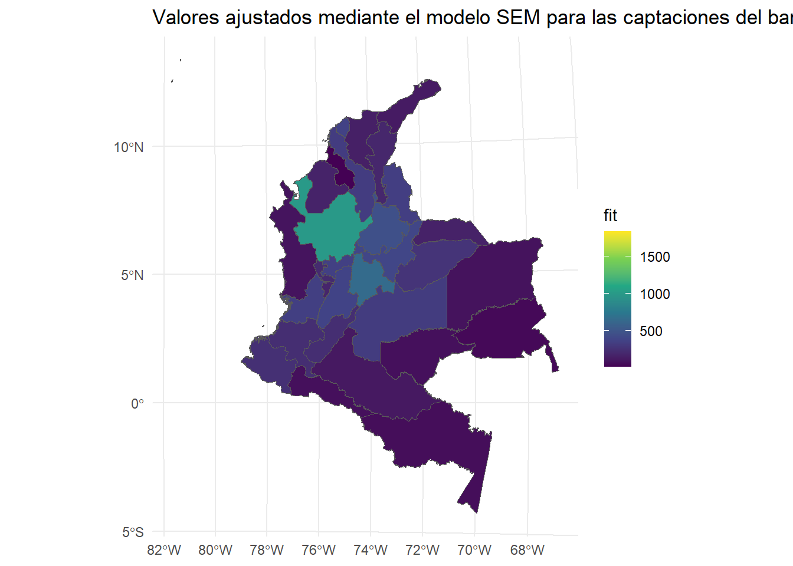

En este apartado se comparan varios tipos de modelos de regresión espacial para ver con cuál se obtiene el mejor ajuste. Se consideran modelos autoregresivos y de medias móviles así como su combinación.
Preparación
Paquetes
library(ggplot2) # Graphics librarylibrary(sf) # Spatial data types and handling
Linking to GEOS 3.12.2, GDAL 3.9.3, PROJ 9.4.1; sf_use_s2() is TRUE
To access larger datasets in this package, install the spDataLarge
package with: `install.packages('spDataLarge',
repos='https://nowosad.github.io/drat/', type='source')`
library(spatialreg) # Spatial lag and spatial error model
Cargando paquete requerido: Matrix
Adjuntando el paquete: 'spatialreg'
The following objects are masked from 'package:spdep':
get.ClusterOption, get.coresOption, get.mcOption,
get.VerboseOption, get.ZeroPolicyOption, set.ClusterOption,
set.coresOption, set.mcOption, set.VerboseOption,
set.ZeroPolicyOption
The following objects are masked from 'package:stats':
filter, lag
The following objects are masked from 'package:base':
intersect, setdiff, setequal, union
library(GISTools)library(spdep)library(car)
Cargando paquete requerido: carData
Adjuntando el paquete: 'car'
The following object is masked from 'package:dplyr':
recode
library(psych)
Adjuntando el paquete: 'psych'
The following object is masked from 'package:car':
logit
The following objects are masked from 'package:ggplot2':
%+%, alpha
library(FactoClass)
Cargando paquete requerido: ade4
Adjuntando el paquete: 'ade4'
The following object is masked from 'package:spdep':
mstree
Cargando paquete requerido: ggrepel
Cargando paquete requerido: xtable
Cargando paquete requerido: scatterplot3d
require("GWmodel")
Cargando paquete requerido: GWmodel
Cargando paquete requerido: robustbase
Cargando paquete requerido: Rcpp
Welcome to GWmodel version 2.4-2.
library(viridis)
Cargando paquete requerido: viridisLite
library("mapsRinteractive")library(ggspatial)
En este paso, se cargan los datos principales desde un archivo Excel (BASE.xlsx) y se leen las fronteras geográficas de Colombia por departamentos usando un archivo shapefile. Los datos espaciales en formato shapefile son cargados con la función st_read de la librería sf.
# Lectura de DatosBASE <-read_excel("data/BASE.xlsx")# Lectura del Shape de Colombia por DepartamentosColombia =st_read(dsn ="data/Geodatabase Colombia", layer ="departamentos")
Reading layer `departamentos' from data source
`D:\SpatFD-Functional-Geostatistics\data\Geodatabase Colombia'
using driver `ESRI Shapefile'
Simple feature collection with 33 features and 6 fields
Geometry type: MULTIPOLYGON
Dimension: XY
Bounding box: xmin: 166883.7 ymin: 23827.08 xmax: 1804084 ymax: 1984107
CRS: NA
Cruce de información y arreglo de coordenadas
Realizamos un cruce de los datos de los departamentos de Colombia con los datos de mercado. Además, se transforma el sistema de coordenadas geográficas de los datos al sistema UTM (Universal Transverse Mercator) para mejorar la precisión en los cálculos espaciales. Esto es especialmente relevante en análisis de distancias y vecindades.
# Mapa de Valores Observados#dev.new() #windows()ggplot(Insumo) +geom_sf(aes(fill = CAP_BAC)) +scale_fill_viridis_c(option='viridis') +# Escala de colores para la variablelabs(fill ="Valores Locales") +theme_minimal() +ggtitle("Valores Observados para las captaciones del banco agrario\nen Colombia, cuarto trimestre 2020") +# Añadir la leyenda personalizadatheme(legend.position ="right") +# Añadir escalaannotation_scale(location ="bl", width_hint =0.15) +annotation_north_arrow(location ="tr", which_north ="true", height =unit(1, "cm"), width =unit(1, "cm"))

Matriz de vecindades
En el análisis espacial, las matrices de vecindad son estructuras que definen las relaciones espaciales entre las unidades de observación. En este caso, cada departamento de Colombia tiene una “vecindad” que se define por su proximidad a otros departamentos.
Centroides de las Áreas: Primero, calculamos los centroides de cada uno de los polígonos (departamentos) usando st_centroid(). Los centroides son los puntos centrales de los polígonos, lo que nos permite calcular distancias entre ellos.
Matriz de Distancias: Usamos st_distance() para calcular la matriz de distancias entre los centroides de los departamentos. Esto nos da una medida de la cercanía geográfica entre las unidades.
Matriz de Vecindades (Insumo.nb): Se utiliza la función poly2nb() del paquete spdep para crear una lista de vecinos basada en la geometría de los departamentos. El parámetro queen = TRUE asegura que un departamento se considere vecino de otro si comparten una frontera común o un vértice.
## Centroides de las ÁreasCentroids <-st_centroid(Insumo.utm)
Warning: st_centroid assumes attributes are constant over geometries
# Matriz de Distancias entre los CentroidesWdist <-st_distance(Centroids)# Matriz W de vecindadesInsumo.nb <-poly2nb(Insumo.utm, queen =TRUE)
Warning in poly2nb(Insumo.utm, queen = TRUE): some observations have no neighbours;
if this seems unexpected, try increasing the snap argument.
Warning in poly2nb(Insumo.utm, queen = TRUE): neighbour object has 2 sub-graphs;
if this sub-graph count seems unexpected, try increasing the snap argument.
Tipos de Matrices de Vecindad
Las matrices de vecindad pueden definirse de diferentes maneras. Aquí se muestran algunas opciones comunes:
Matriz binaria de vecindad: Una matriz donde los valores son 1 si los departamentos son vecinos (según la geometría), y 0 si no lo son. Esto es útil para análisis como los modelos de regresión espacial, donde la vecindad puede influir en la variable dependiente.
Departamentos <- Insumo$Departamenton <-length(Insumo.nb)MatW <-matrix(0, n, n, dimnames =list(Departamentos, Departamentos))for (i in1:n) { vecinos <- Insumo.nb[[i]] MatW[i, vecinos] <-1}
Matrices de vecindad ponderadas: Existen varios tipos de ponderación para las matrices de vecindad, que reflejan diferentes grados de proximidad entre los departamentos. Estas ponderaciones pueden basarse en distancias o en relaciones de contigüidad. Los estilos más comunes son:
Estilo “B” (Binary): Simplemente indica si dos departamentos son vecinos o no (como la matriz binaria).
Estilo “C” (Contiguity): Se utiliza cuando los vecinos comparten una frontera común.
Estilo “W” (Weights): Utiliza una matriz de pesos basada en distancias, donde los vecinos más cercanos tienen mayor peso.
Estilo “U”(Unweighted): En este estilo, los vecinos se definen de forma binaria (con un valor de 1 si hay vecindad y 0 si no la hay), pero a diferencia de otros estilos, no se toma en cuenta el tipo de vecindad exacta (como si comparten frontera o vértice).
#---# MATRIZ DE VECINDADES (W)#---# Opcional: convierte la lista de vecinos en una matriz binaria de vecindades si se necesitaDepartamentos <- Insumo$Departamenton <-length(Insumo.nb)MatW <-matrix(0, n, n, dimnames =list(Departamentos, Departamentos))for (i in1:n) { vecinos <- Insumo.nb[[i]] MatW[i, vecinos] <-1}# Alternativamente, usa diferentes estilos de ponderaciónInsumo.lw <-nb2listw(Insumo.nb, zero.policy =TRUE )Insumo.lwb <-nb2listw(Insumo.nb, style ="B",zero.policy =TRUE)Insumo.lwc <-nb2listw(Insumo.nb, style ="C",zero.policy =TRUE)Insumo.lwu <-nb2listw(Insumo.nb, style ="U",zero.policy =TRUE)Insumo.lww <-nb2listw(Insumo.nb, style ="W",zero.policy =TRUE)
Pruebas de Autocorrelación
Índice de Moran
El índice de Moran es una medida global utilizada para cuantificar la autocorrelación espacial en un conjunto de datos geoespaciales. Este índice evalúa si los valores de una variable en una región tienden a estar agrupados en áreas vecinas o, por el contrario, dispersos. Se calcula comparando el valor de la variable en cada unidad espacial con los valores en sus vecinas, ponderados por la distancia o vecindad. El índice varía entre -1 y 1: un valor cercano a 1 indica que los valores de la variable están positivamente autocorrelacionados, es decir, las unidades cercanas tienen valores similares; un valor cercano a -1 sugiere autocorrelación negativa, donde las unidades cercanas tienen valores opuestos; y un valor cercano a 0 implica ausencia de autocorrelación espacial, lo que significa que los valores están distribuidos aleatoriamente.
moran.test(Insumo$CAP_BAC, Insumo.lw)
Moran I test under randomisation
data: Insumo$CAP_BAC
weights: Insumo.lw
n reduced by no-neighbour observations
Moran I statistic standard deviate = 1.8248, p-value = 0.03401
alternative hypothesis: greater
sample estimates:
Moran I statistic Expectation Variance
0.140449554 -0.033333333 0.009069006
El resultado del test de Moran que se presenta indica lo siguiente:
Moran I statistic: En este caso, el valor de 0.1404 sugiere una autocorrelación espacial positiva débil, lo que implica que los valores cercanos de la variable CAP_BAC podrían presentar una ligera tendencia a estar agrupados.
Expectation (Esperanza): La esperanza teórica del índice de Moran bajo la hipótesis nula es -0.0333. Este valor refleja la media esperada del índice de Moran si no existiera autocorrelación espacial (es decir, si los valores de la variable se distribuyeran aleatoriamente).
Variance (Varianza): La varianza de la estadística de Moran es 0.0091. La varianza describe la dispersión de los valores observados del índice de Moran respecto a su valor esperado bajo la hipótesis nula.
Moran I statistic standard deviate: La desviación estándar de la estadística de Moran es 1.8248. p-value: El valor p es 0.03401. Esto indica que la probabilidad de observar una estadística de Moran igual o más extrema que la observada bajo la hipótesis nula (sin autocorrelación espacial) es de aproximadamente 3.4%. Dado que este valor p es menor que el umbral común de 0.05, podemos rechazar la hipótesis nula de que no hay autocorrelación espacial significativa y concluir que hay evidencia estadística de autocorrelación espacial positiva en los datos de la variable CAP_BAC.
moran.plot(Insumo$CAP_BAC, Insumo.lw, labels=as.character(Insumo$Departamento), xlab="Captaciones BAC", ylab="Captaciones BAC rezagado", las=1, pch=16, cex=0.5)legend("bottomright", legend=c("I de Moran: 0.1530", "Valor P: 0.02262"), cex=1,bg='lightgreen')title("Dispersograma de Moran para las captaciones del banco agrario en los Departamentos de Colombia, cuarto trimestre 2020", cex.main=1)

Local G
El Local G es un índice de autocorrelación espacial que complementa el índice de Moran al permitir la identificación de patrones locales de agrupamiento o dispersión en los datos. Mientras que el índice de Moran proporciona una medida global de la autocorrelación espacial, el Local G permite detectar si ciertas áreas específicas presentan una concentración significativa de valores similares (o diferentes). Este índice se calcula para cada unidad espacial, tomando en cuenta los valores en sus vecinas más cercanas. Los valores de Local G más altos indican áreas de alta concentración de valores similares, mientras que los valores negativos o bajos indican zonas de baja concentración o patrones de dispersión. Es útil para identificar clústeres locales de alta o baja intensidad, lo que permite un análisis más detallado de las estructuras espaciales en los datos.
dnearneigh: Esta función calcula las vecindades entre los elementos espaciales según una distancia determinada. En este caso, se utiliza st_coordinates(Insumo.utm)[, 1:2] para obtener las coordenadas de los departamentos en el sistema de referencia espacial UTM, y se establecen dos parámetros: 0 (distancia mínima) y 550 (distancia máxima) para definir qué unidades espaciales están cerca entre sí.
nb2listw: Convierte la vecindad obtenida (nearng) en una lista de pesos espaciales, donde style=“B” indica que la matriz de vecindad será binaria (vecinos cercanos reciben un valor de 1, y los demás reciben 0). Además, zero.policy = T indica que se manejan correctamente los casos en los que algunas unidades no tienen vecinos (se asigna un valor de 0).
localG: Esta función calcula el índice Local G para la variable CAP_BAC, utilizando la matriz de vecindad definida anteriormente. El resultado muestra el valor de Local G para cada unidad espacial (departamento), lo que permite identificar los clústeres locales de valores similares en CAP_BAC.
# Local GlocalG =localG(Insumo$CAP_BAC, Insumo.lw); localG
Simulación Monte Carlo: Para evaluar la significancia de los resultados obtenidos con el índice Local G, se realizan 1000 simulaciones donde se barajan aleatoriamente los valores de CAP_BAC y se vuelve a calcular el índice Local G para cada permutación. Esto permite comparar los valores observados de Local G con una distribución aleatoria. sweep(sim.G, 2, localG, “>=”): Compara los valores de localGobservados con los valores simulados. Elsweepcompara cada valor desim.Gcon el valor correspondiente delocalG` para cada unidad espacial. Si el valor simulado es mayor o igual que el valor observado, se cuenta como un 1, lo que indica que el valor simulado es al menos tan grande como el observado. colSums(…)+1: Suma cuántos de los valores simulados son mayores o iguales a los valores observados de Local G, añadiendo 1 para evitar valores p de 0. (nrow(sim.G)+1): Se normaliza por el número total de simulaciones (1000), de manera que se obtiene un valor p para cada unidad espacial, indicando la probabilidad de obtener un valor de Local G tan extremo como el observado bajo la distribución aleatoria.
Los valores p calculados (mc.pvalor.G) indican la significancia estadística de los patrones espaciales observados. Un valor p bajo (generalmente menor que 0.05) sugiere que la autocorrelación espacial observada en un departamento es significativamente diferente de la aleatoriedad, lo que indica un clúster local de alta o baja concentración de valores. Los departamentos con valores p bajos pueden considerarse como áreas con patrones espaciales significativos, lo cual es útil para identificar zonas con características especiales en la variable de interés. #### Mapas
library(ggplot2)localG=as.numeric(localG)# Mapa de Gggplot(Insumo.utm) +geom_sf(aes(fill = localG)) +scale_fill_viridis_c() +ggtitle("G Getis Ord Local para las captaciones del banco agrario en Colombia, cuarto trimestre 2020") +theme_minimal()

# Mapa de p-valorggplot(Insumo.utm) +geom_sf(aes(fill = mc.pvalor.G)) +scale_fill_viridis_c() +ggtitle("P-Valor de G Getis Ord Local para las captaciones del banco agrario en Colombia, cuarto trimestre 2020") +theme_minimal()

Regresión Espacial
Los modelos de regresión espacial son fundamentales para capturar la dependencia espacial entre observaciones, un fenómeno común en datos geoespaciales. ### OLS\[y=\mathbf{X}\beta+\varepsilon\] El modelo OLS es la regresión lineal clásica, donde \(y\) es la variable dependiente, \(\mathbf{X}\) es la matriz de covariables, \(\beta\) son los coeficientes a estimar y \(\varepsilon\) es el término de error. Este modelo no captura ninguna dependencia espacial en los errores, lo que puede ser una limitación cuando hay correlación espacial entre las observaciones.
Call:
lm(formula = reg.eq1, data = Insumo)
Residuals:
Min 1Q Median 3Q Max
-285.63 -79.51 -10.25 45.42 402.00
Coefficients:
Estimate Std. Error t value Pr(>|t|)
(Intercept) 1.313e+02 7.573e+01 1.734 0.0958 .
PIB 3.930e-03 3.321e-03 1.183 0.2482
NBI -1.278e+00 1.878e+00 -0.680 0.5028
CAP_BOG -6.148e-02 5.542e-02 -1.109 0.2783
CAP_BC 2.751e-03 5.994e-03 0.459 0.6504
CAP_OCC -4.705e-02 2.152e-02 -2.186 0.0388 *
CAP_CS 4.444e-01 3.203e-01 1.388 0.1780
Población 1.521e-05 6.709e-05 0.227 0.8226
---
Signif. codes: 0 '***' 0.001 '**' 0.01 '*' 0.05 '.' 0.1 ' ' 1
Residual standard error: 142.7 on 24 degrees of freedom
Multiple R-squared: 0.8798, Adjusted R-squared: 0.8447
F-statistic: 25.09 on 7 and 24 DF, p-value: 1.43e-09
SLX (Spatial Lag of X)
\[y=\mathbf{X\beta}+\mathbf{WX\theta}+\varepsilon\] El modelo SLX (Spatial Lag of X) extiende el OLS al incluir el “lag” espacial de las variables explicativas \((\mathbf{WX\theta})\), donde \(\mathbf{W}\) es la matriz de vecindad y \(\mathbf{\theta}\) es el vector de coeficientes correspondientes a las variables explicativas laggeadas. Este modelo captura la influencia de los valores de las covariables de los vecinos en la variable dependiente.
Claro, aquí tienes todo el contenido en formato Markdown para que puedas copiarlo y pegarlo:
Modelo Lag (SAR - Spatial Autoregressive)
\[
y = \mathbf{X\beta} + \mathbf{\rho W y} + u \quad \text{y} \quad u = \lambda W u + \varepsilon
\]
El modelo SAR (Spatial Autoregressive) incluye un término de “lag” en la variable dependiente (\(\mathbf{W y}\)), donde ( \(\mathbf{rho}\)) es el coeficiente asociado al lag espacial. Este modelo captura la dependencia espacial en los valores de la variable dependiente entre vecinos. El término de error ( \(u\)) también está modelado como un proceso autoregresivo espacial (es decir, ( \(u = \lambda W u + \varepsilon\) )), lo que significa que el error de una observación también depende de los errores de sus vecinos.
reg3 =lagsarlm(reg.eq1, data = Insumo, Insumo.lw, zero.policy =TRUE)
Warning in lagsarlm(reg.eq1, data = Insumo, Insumo.lw, zero.policy = TRUE): inversion of asymptotic covariance matrix failed for tol.solve = 2.22044604925031e-16
número de condición recíproco = 5.86692e-18 - using numerical Hessian.
summary(reg3)
Call:lagsarlm(formula = reg.eq1, data = Insumo, listw = Insumo.lw,
zero.policy = TRUE)
Residuals:
Min 1Q Median 3Q Max
-214.497 -61.665 -15.071 34.870 395.222
Type: lag
Regions with no neighbours included:
28
Coefficients: (numerical Hessian approximate standard errors)
Estimate Std. Error z value Pr(>|z|)
(Intercept) 6.8199e+01 7.2159e+01 0.9451 0.34459
PIB 3.1708e-03 2.7729e-03 1.1435 0.25283
NBI -1.0169e+00 1.5539e+00 -0.6544 0.51284
CAP_BOG -4.7766e-02 4.6328e-02 -1.0310 0.30253
CAP_BC 4.7788e-03 5.0817e-03 0.9404 0.34702
CAP_OCC -3.5245e-02 1.8997e-02 -1.8553 0.06355
CAP_CS 3.6931e-01 2.6724e-01 1.3820 0.16699
Población 1.0303e-05 5.5724e-05 0.1849 0.85331
Rho: 0.2533, LR test value: 2.8104, p-value: 0.093656
Approximate (numerical Hessian) standard error: 0.14574
z-value: 1.738, p-value: 0.082208
Wald statistic: 3.0207, p-value: 0.082208
Log likelihood: -198.1508 for lag model
ML residual variance (sigma squared): 13793, (sigma: 117.44)
Number of observations: 32
Number of parameters estimated: 10
AIC: 416.3, (AIC for lm: 417.11)
Modelo de Error Espacial (SEM - Spatial Error Model)
El Modelo de Error Espacial (SEM) incluye una corrección para la dependencia espacial en los errores ($ $), donde ( \(\lambda\) ) es el coeficiente que mide la fuerza de la correlación espacial en los errores. El modelo SEM no incluye un “lag” espacial en la variable dependiente, sino que captura la dependencia espacial en el término de error.
reg4 =errorsarlm(reg.eq1, data = Insumo, Insumo.lw, zero.policy =TRUE)
Warning in errorsarlm(reg.eq1, data = Insumo, Insumo.lw, zero.policy = TRUE): inversion of asymptotic covariance matrix failed for tol.solve = 2.22044604925031e-16
número de condición recíproco = 9.31736e-18 - using numerical Hessian.
summary(reg4)
Call:errorsarlm(formula = reg.eq1, data = Insumo, listw = Insumo.lw,
zero.policy = TRUE)
Residuals:
Min 1Q Median 3Q Max
-218.740 -53.251 -12.473 40.884 430.689
Type: error
Regions with no neighbours included:
28
Coefficients: (asymptotic standard errors)
Estimate Std. Error z value Pr(>|z|)
(Intercept) 8.1541e+01 6.6482e+01 1.2265 0.220010
PIB 3.4910e-03 2.6338e-03 1.3254 0.185024
NBI -5.7398e-01 1.5259e+00 -0.3762 0.706802
CAP_BOG -2.2704e-02 4.9984e-02 -0.4542 0.649667
CAP_BC 1.5961e-05 5.3543e-03 0.0030 0.997622
CAP_OCC -5.2267e-02 1.9001e-02 -2.7508 0.005945
CAP_CS 2.3351e-01 2.8637e-01 0.8154 0.414840
Población 5.7012e-05 6.5438e-05 0.8712 0.383627
Lambda: 0.52347, LR test value: 4.2435, p-value: 0.0394
Approximate (numerical Hessian) standard error: 0.20488
z-value: 2.5551, p-value: 0.010617
Wald statistic: 6.5283, p-value: 0.010617
Log likelihood: -197.4342 for error model
ML residual variance (sigma squared): 12472, (sigma: 111.68)
Number of observations: 32
Number of parameters estimated: 10
AIC: 414.87, (AIC for lm: 417.11)
Modelo de Durbin Espacial con Error (SDEM - Spatial Durbin Error Model)
\[y = X\beta + W X \theta + u \quad \text{y} \quad u = \lambda W u + \varepsilon\]
El Modelo de Durbin Espacial con Error (SDEM) es una combinación del modelo de error espacial y el modelo de regresión espacial Durbin. En este modelo, no solo se incluye un término de “lag” espacial para la variable dependiente, sino también para las variables explicativas. El término de error (\(u\)) sigue un proceso autoregresivo espacial. Este modelo captura tanto la dependencia espacial en las variables dependientes como en las explicativas.
reg5 =errorsarlm(reg.eq1, data = Insumo, Insumo.lw, etype ="emixed", zero.policy =TRUE)
Warning in errorsarlm(reg.eq1, data = Insumo, Insumo.lw, etype = "emixed", : inversion of asymptotic covariance matrix failed for tol.solve = 2.22044604925031e-16
número de condición recíproco = 9.13061e-18 - using numerical Hessian.
summary(reg5)
Call:errorsarlm(formula = reg.eq1, data = Insumo, listw = Insumo.lw,
etype = "emixed", zero.policy = TRUE)
Residuals:
Min 1Q Median 3Q Max
-211.810 -47.834 -11.501 56.293 377.775
Type: error
Regions with no neighbours included:
28
Coefficients: (asymptotic standard errors)
Estimate Std. Error z value Pr(>|z|)
(Intercept) 2.8964e+01 1.0590e+02 0.2735 0.7845
PIB 4.4110e-03 2.8308e-03 1.5582 0.1192
NBI 3.5633e-01 1.8031e+00 0.1976 0.8433
CAP_BOG -3.8107e-02 5.4243e-02 -0.7025 0.4824
CAP_BC -1.6123e-03 6.6418e-03 -0.2427 0.8082
CAP_OCC -5.3413e-02 2.3321e-02 -2.2903 0.0220
CAP_CS 2.8575e-01 3.0596e-01 0.9339 0.3503
Población 5.3045e-05 7.7522e-05 0.6843 0.4938
lag.PIB 4.1782e-03 7.6459e-03 0.5465 0.5847
lag.NBI -5.8691e-01 3.1145e+00 -0.1884 0.8505
lag.CAP_BOG -1.0933e-01 1.1822e-01 -0.9248 0.3551
lag.CAP_BC -5.3450e-03 1.0944e-02 -0.4884 0.6253
lag.CAP_OCC -1.7609e-02 4.3079e-02 -0.4088 0.6827
lag.CAP_CS 5.0040e-01 7.0948e-01 0.7053 0.4806
lag.Población -5.1562e-05 1.2903e-04 -0.3996 0.6894
Lambda: 0.46671, LR test value: 2.1801, p-value: 0.13981
Approximate (numerical Hessian) standard error: 0.27542
z-value: 1.6945, p-value: 0.090164
Wald statistic: 2.8714, p-value: 0.090164
Log likelihood: -196.0596 for error model
ML residual variance (sigma squared): 11631, (sigma: 107.85)
Number of observations: 32
Number of parameters estimated: 17
AIC: 426.12, (AIC for lm: 426.3)
\[y = X\beta + W y \rho + W X \theta + \varepsilon\]
El Modelo Durbin Espacial (SDM) es una extensión del modelo SAR que incluye tanto un “lag” espacial de la variable dependiente como un “lag” espacial de las variables explicativas. Este modelo permite que las variables explicativas influyan tanto directamente como a través de sus efectos espaciales en la variable dependiente.
reg6 =lagsarlm(reg.eq1, data = Insumo, Insumo.lw, type ="mixed", zero.policy =TRUE)
Warning in lagsarlm(reg.eq1, data = Insumo, Insumo.lw, type = "mixed", zero.policy = TRUE): inversion of asymptotic covariance matrix failed for tol.solve = 2.22044604925031e-16
número de condición recíproco = 4.58189e-18 - using numerical Hessian.
summary(reg6)
Call:lagsarlm(formula = reg.eq1, data = Insumo, listw = Insumo.lw,
type = "mixed", zero.policy = TRUE)
Residuals:
Min 1Q Median 3Q Max
-203.5501 -57.4964 -9.1121 49.0668 377.8941
Type: mixed
Regions with no neighbours included:
28
Coefficients: (numerical Hessian approximate standard errors)
Estimate Std. Error z value Pr(>|z|)
(Intercept) 5.6710e+01 1.0611e+02 0.5344 0.59304
PIB 3.8566e-03 2.7986e-03 1.3781 0.16819
NBI 1.4678e-01 2.1429e+00 0.0685 0.94539
CAP_BOG -1.4527e-02 5.7942e-02 -0.2507 0.80203
CAP_BC -2.9294e-03 6.8930e-03 -0.4250 0.67085
CAP_OCC -5.8433e-02 2.3689e-02 -2.4666 0.01364
CAP_CS 1.6655e-01 3.2580e-01 0.5112 0.60922
Población 7.9995e-05 8.3984e-05 0.9525 0.34084
lag.PIB 1.1073e-03 6.6845e-03 0.1657 0.86843
lag.NBI -1.1460e+00 3.1540e+00 -0.3634 0.71633
lag.CAP_BOG -1.1343e-01 1.1758e-01 -0.9647 0.33469
lag.CAP_BC -1.2808e-04 1.0278e-02 -0.0125 0.99006
lag.CAP_OCC 7.3867e-03 4.4739e-02 0.1651 0.86886
lag.CAP_CS 5.3185e-01 6.9614e-01 0.7640 0.44487
lag.Población -9.8368e-05 1.3609e-04 -0.7228 0.46979
Rho: 0.38762, LR test value: 2.4703, p-value: 0.11602
Approximate (numerical Hessian) standard error: 0.22804
z-value: 1.6998, p-value: 0.089166
Wald statistic: 2.8894, p-value: 0.089166
Log likelihood: -195.9145 for mixed model
ML residual variance (sigma squared): 11739, (sigma: 108.34)
Number of observations: 32
Number of parameters estimated: 17
AIC: 425.83, (AIC for lm: 426.3)
Modelo Manski (Manski Model)
\[y = \rho W y + X \beta + W X \theta + u \quad \text{y} \quad u = \lambda W u + \varepsilon\]
El Modelo Manski es similar al modelo SDM, pero tiene una estructura más compleja en cuanto a la autocorrelación espacial de los errores. Este modelo incluye tanto el “lag” espacial de la variable dependiente, como los “lags” espaciales de las variables explicativas. La diferencia principal con el modelo SDM es el tratamiento más complejo de los términos de error.
reg7 =sacsarlm(reg.eq1, data = Insumo, Insumo.lw, type ="sacmixed", zero.policy =TRUE)
Warning in sacsarlm(reg.eq1, data = Insumo, Insumo.lw, type = "sacmixed", : inversion of asymptotic covariance matrix failed for tol.solve = 2.22044604925031e-16
número de condición recíproco = 4.61347e-18 - using numerical Hessian.
summary(reg7)
Call:sacsarlm(formula = reg.eq1, data = Insumo, listw = Insumo.lw,
type = "sacmixed", zero.policy = TRUE)
Residuals:
Min 1Q Median 3Q Max
-204.541 -53.811 -12.538 51.980 382.238
Type: sacmixed
Coefficients: (numerical Hessian approximate standard errors)
Estimate Std. Error z value Pr(>|z|)
(Intercept) 4.8808e+01 1.1502e+02 0.4243 0.67131
PIB 4.0090e-03 2.8803e-03 1.3919 0.16396
NBI 2.1612e-01 1.9200e+00 0.1126 0.91038
CAP_BOG -2.2486e-02 6.9157e-02 -0.3251 0.74507
CAP_BC -2.3158e-03 7.5058e-03 -0.3085 0.75768
CAP_OCC -5.6496e-02 2.5908e-02 -2.1806 0.02921
CAP_CS 2.0887e-01 3.8203e-01 0.5467 0.58456
Población 6.9346e-05 9.6780e-05 0.7165 0.47366
lag.PIB 1.5704e-03 7.9396e-03 0.1978 0.84321
lag.NBI -9.9232e-01 3.1209e+00 -0.3180 0.75051
lag.CAP_BOG -1.1048e-01 1.2387e-01 -0.8919 0.37243
lag.CAP_BC -1.5701e-03 1.3233e-02 -0.1187 0.90555
lag.CAP_OCC 2.5166e-03 5.0022e-02 0.0503 0.95988
lag.CAP_CS 5.1478e-01 7.4300e-01 0.6928 0.48841
lag.Población -8.2594e-05 1.4845e-04 -0.5564 0.57796
Rho: 0.31266
Approximate (numerical Hessian) standard error: 0.50048
z-value: 0.62472, p-value: 0.53215
Lambda: 0.13054
Approximate (numerical Hessian) standard error: 0.71242
z-value: 0.18324, p-value: 0.85461
LR test value: 7.3157, p-value: 0.60429
Log likelihood: -195.8981 for sacmixed model
ML residual variance (sigma squared): 11840, (sigma: 108.81)
Number of observations: 32
Number of parameters estimated: 18
AIC: 427.8, (AIC for lm: 417.11)
Modelo SARAR (Kelejian-Prucha, Cliff-Ord, SAC)
\[y = X\beta + \rho W y + u \quad \text{y} \quad u = \lambda W u + \varepsilon\]
El Modelo SARAR (también conocido como modelo Kelejian-Prucha o Cliff-Ord) es un modelo que combina características del modelo SAR y SEM. Este modelo tiene un término de “lag” espacial en la variable dependiente y un término de error espacial autoregresivo, lo que permite capturar tanto la dependencia espacial en la variable dependiente como en el error.
reg8 =sacsarlm(reg.eq1, data = Insumo, Insumo.lw, type ="sac", zero.policy =TRUE)
Warning in sacsarlm(reg.eq1, data = Insumo, Insumo.lw, type = "sac", zero.policy = TRUE): inversion of asymptotic covariance matrix failed for tol.solve = 2.22044604925031e-16
número de condición recíproco = 8.70662e-18 - using numerical Hessian.
summary(reg8)
Call:sacsarlm(formula = reg.eq1, data = Insumo, listw = Insumo.lw,
type = "sac", zero.policy = TRUE)
Residuals:
Min 1Q Median 3Q Max
-205.1587 -56.7315 -9.4429 31.9574 422.6304
Type: sac
Coefficients: (numerical Hessian approximate standard errors)
Estimate Std. Error z value Pr(>|z|)
(Intercept) 6.4572e+01 7.2349e+01 0.8925 0.37212
PIB 3.2940e-03 2.6769e-03 1.2305 0.21850
NBI -6.2802e-01 1.5495e+00 -0.4053 0.68526
CAP_BOG -3.2650e-02 5.1324e-02 -0.6361 0.52468
CAP_BC 2.2998e-03 6.0593e-03 0.3795 0.70428
CAP_OCC -4.4343e-02 2.1685e-02 -2.0449 0.04086
CAP_CS 2.8775e-01 2.9320e-01 0.9814 0.32638
Población 3.8417e-05 6.7901e-05 0.5658 0.57155
Rho: 0.13272
Approximate (numerical Hessian) standard error: 0.18411
z-value: 0.72086, p-value: 0.471
Lambda: 0.40988
Approximate (numerical Hessian) standard error: 0.27523
z-value: 1.4892, p-value: 0.13643
LR test value: 4.7255, p-value: 0.094163
Log likelihood: -197.1932 for sac model
ML residual variance (sigma squared): 12607, (sigma: 112.28)
Number of observations: 32
Number of parameters estimated: 11
AIC: 416.39, (AIC for lm: 417.11)
Cálculo de variables significativas
Pueden calcularse las variables significativas de cada modelo de regresión, proporcionando los coeficientes estimados y los valores p asociados.
Warning in errorsarlm(reg.eq2, data = Insumo, Insumo.lw, zero.policy = TRUE): inversion of asymptotic covariance matrix failed for tol.solve = 2.22044604925031e-16
número de condición recíproco = 9.34261e-18 - using numerical Hessian.
s = summarys(reg4)#Lag Error (SEM)
Call:errorsarlm(formula = reg.eq2, data = Insumo, listw = Insumo.lw,
zero.policy = TRUE)
Residuals:
Min 1Q Median 3Q Max
-211.532 -51.640 -10.342 43.439 434.624
Type: error
Regions with no neighbours included:
28
Coefficients: (asymptotic standard errors)
Estimate Std. Error z value Pr(>|z|)
(Intercept) 6.5053e+01 5.2382e+01 1.2419 0.214276
PIB 3.7321e-03 2.5473e-03 1.4651 0.142880
CAP_BOG -2.6478e-02 4.8603e-02 -0.5448 0.585908
CAP_BC 2.1298e-05 5.3721e-03 0.0040 0.996837
CAP_OCC -5.2253e-02 1.9059e-02 -2.7417 0.006113
CAP_CS 2.5082e-01 2.8122e-01 0.8919 0.372449
Población 5.3526e-05 6.4802e-05 0.8260 0.408807
Lambda: 0.53453, LR test value: 4.7167, p-value: 0.029871
Approximate (numerical Hessian) standard error: 0.19933
z-value: 2.6816, p-value: 0.007327
Wald statistic: 7.191, p-value: 0.007327
Log likelihood: -197.5033 for error model
ML residual variance (sigma squared): 12482, (sigma: 111.72)
Number of observations: 32
Number of parameters estimated: 9
AIC: 413.01, (AIC for lm: 415.72)
Warning in errorsarlm(reg.eq3, data = Insumo, Insumo.lw, zero.policy = TRUE): inversion of asymptotic covariance matrix failed for tol.solve = 2.22044604925031e-16
número de condición recíproco = 9.39308e-18 - using numerical Hessian.
s(reg4)#Lag Error (SEM)
Call:errorsarlm(formula = reg.eq3, data = Insumo, listw = Insumo.lw,
zero.policy = TRUE)
Residuals:
Min 1Q Median 3Q Max
-211.604 -51.658 -10.314 43.452 434.644
Type: error
Regions with no neighbours included:
28
Coefficients: (asymptotic standard errors)
Estimate Std. Error z value Pr(>|z|)
(Intercept) 6.4949e+01 4.6184e+01 1.4063 0.1596331
PIB 3.7353e-03 2.4024e-03 1.5548 0.1199876
CAP_BOG -2.6340e-02 3.5604e-02 -0.7398 0.4594136
CAP_OCC -5.2300e-02 1.4786e-02 -3.5372 0.0004044
CAP_CS 2.5002e-01 2.0469e-01 1.2215 0.2219007
Población 5.3668e-05 5.4615e-05 0.9827 0.3257723
Lambda: 0.53464, LR test value: 4.9211, p-value: 0.02653
Approximate (numerical Hessian) standard error: 0.19966
z-value: 2.6777, p-value: 0.0074134
Wald statistic: 7.17, p-value: 0.0074134
Log likelihood: -197.5033 for error model
ML residual variance (sigma squared): 12482, (sigma: 111.72)
Number of observations: 32
Number of parameters estimated: 8
AIC: 411.01, (AIC for lm: 413.93)
Warning in errorsarlm(reg.eq4, data = Insumo, Insumo.lw, zero.policy = TRUE): inversion of asymptotic covariance matrix failed for tol.solve = 2.22044604925031e-16
número de condición recíproco = 9.49253e-18 - using numerical Hessian.
s(reg4)#Lag Error (SEM)
Call:errorsarlm(formula = reg.eq4, data = Insumo, listw = Insumo.lw,
zero.policy = TRUE)
Residuals:
Min 1Q Median 3Q Max
-197.278 -57.885 -10.374 35.522 448.779
Type: error
Regions with no neighbours included:
28
Coefficients: (asymptotic standard errors)
Estimate Std. Error z value Pr(>|z|)
(Intercept) 6.5631e+01 4.8473e+01 1.3540 0.1757428
PIB 3.5303e-03 2.3971e-03 1.4727 0.1408221
CAP_OCC -5.0850e-02 1.4681e-02 -3.4638 0.0005327
CAP_CS 1.0179e-01 3.7538e-02 2.7115 0.0066982
Población 6.3364e-05 5.3434e-05 1.1858 0.2356933
Lambda: 0.57217, LR test value: 7.0658, p-value: 0.0078569
Approximate (numerical Hessian) standard error: 0.17965
z-value: 3.185, p-value: 0.0014477
Wald statistic: 10.144, p-value: 0.0014477
Log likelihood: -197.7534 for error model
ML residual variance (sigma squared): 12518, (sigma: 111.88)
Number of observations: 32
Number of parameters estimated: 7
AIC: 409.51, (AIC for lm: 414.57)
Call:errorsarlm(formula = reg.eq5, data = Insumo, listw = Insumo.lw,
zero.policy = TRUE)
Residuals:
Min 1Q Median 3Q Max
-184.748 -63.304 -12.444 40.679 448.841
Type: error
Regions with no neighbours included:
28
Coefficients: (asymptotic standard errors)
Estimate Std. Error z value Pr(>|z|)
(Intercept) 88.65061930 44.45631621 1.9941 0.046140
PIB 0.00617514 0.00092824 6.6525 2.881e-11
CAP_OCC -0.04719334 0.01471065 -3.2081 0.001336
CAP_CS 0.07187945 0.02876778 2.4986 0.012468
Lambda: 0.55051, LR test value: 6.002, p-value: 0.014289
Asymptotic standard error: 0.17223
z-value: 3.1964, p-value: 0.0013917
Wald statistic: 10.217, p-value: 0.0013917
Log likelihood: -198.4352 for error model
ML residual variance (sigma squared): 13162, (sigma: 114.72)
Number of observations: 32
Number of parameters estimated: 6
AIC: 408.87, (AIC for lm: 412.87)
Mapa estimado
fit <- reg2$fitted.valuesggplot(Insumo.utm) +geom_sf(aes(fill = fit)) +scale_fill_viridis_c() +ggtitle("Valores ajustados mediante el modelo SEM para las captaciones del banco agrario en Colombia, cuarto trimestre 2020") +theme_minimal()

###Test de moran residuales modelo SEMmoran.test(reg4$residuals, Insumo.lw)
Moran I test under randomisation
data: reg4$residuals
weights: Insumo.lw
n reduced by no-neighbour observations
Moran I statistic standard deviate = 0.81038, p-value = 0.2089
alternative hypothesis: greater
sample estimates:
Moran I statistic Expectation Variance
0.05128789 -0.03333333 0.01090389